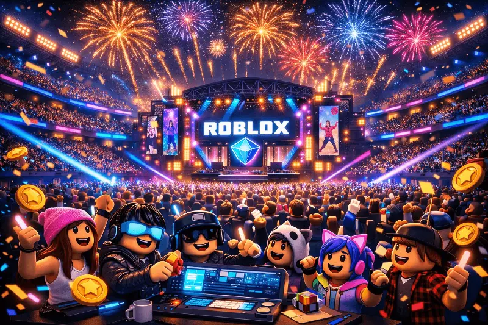

Calendario de eventos de Roblox en 2026: recompensas exclusivas y cómo participar

Roblox lleva celebrando eventos comunitarios desde 2008, cuando el primer Egg Hunt era poco más que una búsqueda de huevos decorativos en un mapa básico. En 2026, los eventos de la plataforma son producciones de escala comparable a lanzamientos AAA: conciertos con millones de asistentes simultáneos, colaboraciones con marcas globales, experiencias narrativas que cruzan múltiples juegos y recompensas exclusivas que los jugadores coleccionan como piezas de patrimonio digital. Si quieres estar en el lugar correcto en el momento correcto, esta es tu guía.
La evolución de los eventos: del Egg Hunt clásico a los cruces de marcas globales
El Egg Hunt es la tradición más antigua de Roblox. Durante años fue el único evento global de la plataforma, y su fórmula era simple: coleccionar huevos decorados escondidos en juegos seleccionados a cambio de sombreros para el avatar. Era un pretexto perfecto para descubrir nuevas experiencias y ganar ítems exclusivos.
La transformación llegó cuando Roblox comenzó a colaborar con marcas externas para producir eventos de mayor escala. La alianza con marcas de entretenimiento, música y moda convirtió a Roblox en un espacio donde las estrategias de marketing de grandes corporaciones se fusionan con el juego. En 2026, un evento de Roblox puede incluir simultáneamente un concierto en directo, el lanzamiento de ropa virtual de una marca real, una narrativa de misiones que se desarrolla a lo largo de semanas y recompensas físicas vinculadas a la experiencia digital.
Los eventos más esperados de 2026: The Hunt, Innovator Awards y colaboraciones
The Hunt: First Edition 2026
Evento oficialLa evolución natural del Egg Hunt clásico. The Hunt es una búsqueda cross-platform donde los jugadores completan desafíos en decenas de experiencias seleccionadas para acumular medallas y desbloquear recompensas de avatar escalonadas. La mecánica de medallas reemplaza a los huevos pero mantiene el espíritu original: explorar el catálogo de juegos de Roblox guiado por recompensas atractivas.
Cuándo: Primavera 2026 (fechas exactas anunciadas en @Roblox) · Recompensas: Ítems de avatar escalonados según número de medallas conseguidas.
Roblox Innovator Awards 2026
Evento oficialLa gala anual donde la comunidad vota por los mejores juegos, los creadores más innovadores y los momentos más memorables de la plataforma. Para los jugadores, participar en la votación desbloquea ítems exclusivos de avatar que solo están disponibles durante el período de la ceremonia. Para los desarrolladores, es el reconocimiento más visible de su trabajo.
Cuándo: Segundo trimestre 2026 · Participación: Solo requiere tener cuenta activa de Roblox y votar en las categorías.
Colaboraciones con marcas: el modelo de 2026
ColaboraciónEn 2026, Roblox gestiona activamente colaboraciones con marcas de moda, entretenimiento y tecnología que producen experiencias de entre dos y cuatro semanas dentro de la plataforma. Estas colaboraciones incluyen tiendas virtuales donde los jugadores consiguen versiones digitales de ropa de marcas reales, eventos narrativos exclusivos y a veces recompensas físicas vinculadas mediante códigos in-game.
Las colaboraciones más esperadas del año se anuncian con semanas de antelación en las redes sociales de Roblox. Seguir estas cuentas es la forma más fiable de saber qué viene.
| Período | Evento | Tipo | Recompensas |
|---|---|---|---|
| Marzo–Abril | The Hunt: First Edition | Plataforma oficial | Ítems avatar gratis |
| Abril | Egg Hunt (edición legacy) | Plataforma oficial | Sombreros gratuitos |
| Mayo–Junio | Roblox Innovator Awards | Comunitario/oficial | Ítem exclusivo votación |
| Julio | RDC (Developer Conference) | Desarrolladores | Badge exclusivo |
| Septiembre | Colaboración de temporada | Marca externa | Ropa limitada de pago/gratis |
| Octubre | Halloween Event | Plataforma oficial | Accesorios temáticos gratis |
| Diciembre | Winter Wonderland | Plataforma oficial | Sombrero navideño exclusivo |
Conciertos virtuales y festivales: la música dentro del metaverso
Los conciertos virtuales de Roblox pasaron de ser experimentos técnicos a convertirse en algunos de los eventos más concurridos de la plataforma. En 2026, la arquitectura de los conciertos ha madurado: las experiencias de música en directo combinan visualizaciones generativas sincronizadas con la música en tiempo real, avatares del artista en escala monumental y efectos de partículas que reaccionan al ritmo.
Los asistentes no son espectadores pasivos: pueden moverse por el escenario virtual, interactuar con instalaciones dentro del concierto y, en los eventos más elaborados, influir en elementos del espectáculo mediante votaciones en tiempo real. La recompensa de los conciertos suele ser un accesorio o efecto de avatar exclusivo que solo obtienes si estás presente durante el espectáculo.
Festival de Música de Roblox 2026
Concierto virtualLa edición 2026 del festival musical anual de Roblox escala el formato de años anteriores con múltiples escenarios activos simultáneamente, cada uno alojando artistas de géneros diferentes. Los jugadores pueden teletransportarse entre escenarios durante el evento y coleccionar ítems de avatar de cada actuación que asisten.
Formato: Múltiples escenarios · Duración: 72 horas · Recompensa: Efecto de avatar exclusivo por asistencia.
Cómo prepararte para no perder los objetos limitados (UGC de tiempo limitado)
Los ítems de tiempo limitado son la categoría de recompensa más deseada y más escurridiza de los eventos de Roblox. A diferencia de los ítems de catálogo permanentes, estos artículos desaparecen del sistema de obtención cuando termina el evento. Una vez en tu inventario son tuyos para siempre, pero si no los consigues durante la ventana activa, la única forma de tenerlos es el mercado de intercambio —donde su precio puede ser muy superior al valor original.
- Activa notificaciones de @Roblox en X y en YouTube. Los ítems de tiempo limitado se anuncian con poca antelación para crear urgencia. Las notificaciones en tiempo real son tu seguro contra perderte los anuncios.
- Completa los requisitos el primer día disponible. Algunos eventos tienen cupos limitados para los ítems más exclusivos que se agotan antes de que termine el período oficial. Actuar el primer día de apertura elimina ese riesgo.
- Verifica que tienes los prerrequisitos antes de que empiece el evento. Algunos ítems requieren tener cuenta Premium activa, cierto nivel de antigüedad en la plataforma o haber participado en eventos anteriores. Revisa los requisitos en cuanto se anuncien.
- Guarda los códigos de canje con fechas de expiración. Algunos eventos distribuyen ítems a través de Promo Codes de tiempo limitado. Canjéalos inmediatamente, no esperes.
- Documenta tu inventario antes del evento. Si al terminar el evento el ítem no aparece en tu inventario, necesitarás evidencia de que completaste los requisitos para contactar a soporte.
Eventos de la comunidad vs. eventos oficiales de la plataforma
No todos los eventos de Roblox son producidos por Roblox Corporation. Los desarrolladores independientes organizan sus propios eventos dentro de sus experiencias, con recompensas in-game y mecánicas propias. Esta distinción es importante porque afecta directamente qué tipo de recompensa obtienes y cuánta garantía tienes de que el evento se desarrollará según lo prometido.
Eventos oficiales de la plataforma
Plataforma oficialOrganizados directamente por Roblox Corporation. Garantizan: distribución de ítems de avatar que permanecen en tu inventario indefinidamente, soporte técnico ante problemas, y un calendario comunicado con antelación razonable. Son los que debes priorizar si solo puedes participar en algunos eventos al año.
Eventos de la comunidad (desarrolladores independientes)
ComunidadOrganizados por estudios de desarrollo dentro de la plataforma. Pueden ser tan elaborados como los oficiales —algunos estudios invierten semanas de trabajo en sus eventos— pero las recompensas son in-game (dentro del juego específico) y no se trasladan al avatar global. Son excelentes para profundizar en comunidades de juegos específicos y pueden ofrecer ítems in-game de alto valor si participas en juegos con economías desarrolladas como Blox Fruits o Adopt Me!
Mantente al día: RBLXNews es tu fuente de eventos en español
El calendario de eventos de Roblox en 2026 es más denso y ambicioso que en cualquier año anterior. La plataforma ha entendido que los eventos no son un complemento a la experiencia de juego: son el motor de retención más poderoso que tiene, el mecanismo que trae de vuelta a jugadores inactivos y el que mantiene a los activos revisando la plataforma regularmente.
Para la comunidad hispanohablante, mantenerse informado de estos eventos con la antelación suficiente para prepararse ha sido históricamente difícil: la mayoría de la información disponible llega en inglés, con retraso o con errores de traducción. En RBLXNews cubrimos cada evento oficial con anticipación, en español, con todos los detalles que necesitas para participar desde el primer momento y asegurar cada recompensa disponible.
- Activa notificaciones de @Roblox en X (Twitter).
- Suscríbete al canal de YouTube oficial de Roblox.
- Revisa la sección «Eventos» de Roblox.com una vez por semana.
- Sigue a RBLXNews para coberturas en español con antelación.
- Canjea los ítems y Promo Codes de eventos el primer día disponible.